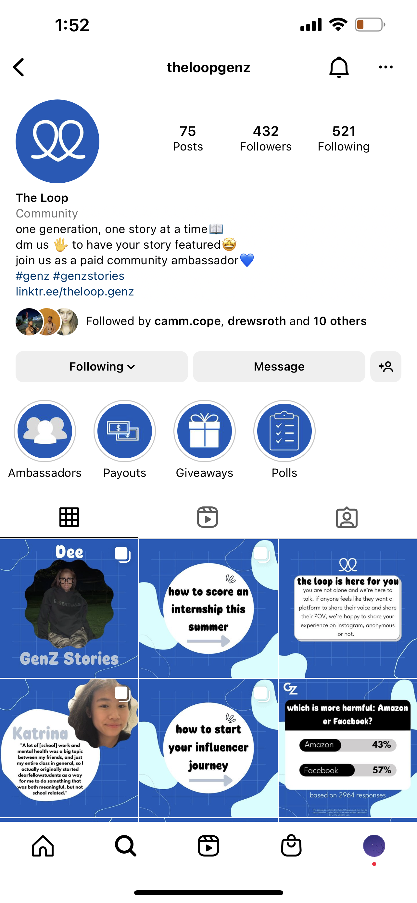

YALE SENIOR THESIS (virtual version)
A multimedia exhibition I created about surveillance, selfhood, and authenticity... (link)

When I first joined dcdx, a cohesive branding of the "Loop"- their community of Gen Z-ers that they call upon for research- was lacking. My plan to expand the community started with a rebrand. The Loop needed a logo, a theme, and an Instagram (for more casual research questions and surveys). I started with the colors. Using warm colors that were Instagram-inspired, I created a bunch of post templates.

I also had ideas for how the Instagram could be utilized. The Instagram should be relatable but also reflect that the company works with brands that we've researched. So I created a 3-column approach. There would be 3 kinds of posts: memes (relatable), brand/influencer spotlights, and infographics. These would be posted in an alternating fashion.

After that, I worked on the logo. I wanted the form to reflect the feeling of a literal loop. I also wanted it to be influenced by the keywords "community", "youth", and "connection."


This is what the loop looks like today. When I was at the company, it had around 200 followers. They have since then changed the theme to blue, but the logo remains.
CLICK HERE to see my work for the Trill Project. Trill Project is a freemium social networking app that fosters a positive, supportive online community. The app lets users anonymously join moderated communities related to issues they might need help with like anxiety, addiction, and LGBTQ concerns. I worked on content for social channels, such as Medium, Instagram, Tumblr, and TikTok.